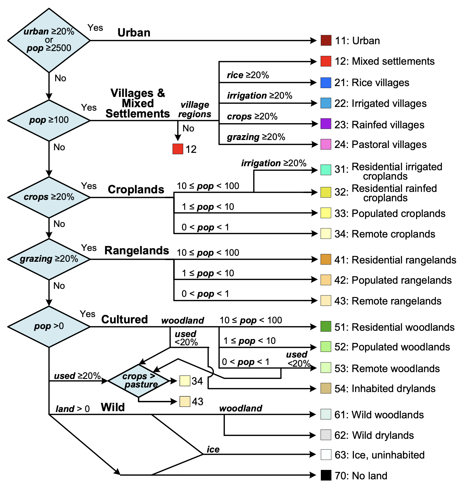

A gentle introduction to the anthromes R package
Source:vignettes/anthromes-intro.Rmd
anthromes-intro.RmdThis vignette presents an example workflow for using the anthromes R package for analyzing long-term human populations and land use.
First load the anthromes package.
# analysis packages
library(anthromes)
library(stars)
#> Loading required package: abind
#> Loading required package: sf
#> Linking to GEOS 3.8.1, GDAL 3.1.4, PROJ 6.3.1
library(dplyr)
#>
#> Attaching package: 'dplyr'
#> The following objects are masked from 'package:stats':
#>
#> filter, lag
#> The following objects are masked from 'package:base':
#>
#> intersect, setdiff, setequal, union
library(ggplot2)
# visualization packages
library(gganimate)
library(patchwork)Although the package is able to work with global data, we’ll focus just on a subset of the eastern Mediterranean for simplicity.
bbox <- st_bbox(c(xmin = 29, xmax = 39, ymin = 30, ymax = 40), crs = 4326)Download HYDE 3.2 data
Read in the anthromes data as a stars object. stars in an R package for working with space-time cubes like the HYDE 3.2 data, which are spatial rasters representing multiple time steps.
hyde_med
#> stars object with 3 dimensions and 6 attributes
#> attribute(s):
#> Min. 1st Qu. Median Mean 3rd Qu. Max.
#> crops 0 0.000179287 1.3989784 8.5791286 10.348840 74.3285
#> grazing 0 0.068011791 0.9421589 4.0070415 3.382091 74.0772
#> rice 0 0.000000000 0.0000000 0.1056585 0.000000 73.8234
#> pop 0 65.238454819 222.5272064 2060.4865140 620.780472 1802804.1250
#> irrigation 0 0.000000000 0.0000000 1.3722187 0.000000 74.2032
#> urban 0 0.000000000 0.0000000 0.1139881 0.000000 74.3285
#> NA's
#> crops 27132
#> grazing 27132
#> rice 27132
#> pop 27132
#> irrigation 27132
#> urban 27132
#> dimension(s):
#> from to offset delta refsys point values x/y
#> x 2509 2629 -180 0.0833333 WGS 84 FALSE NULL [x]
#> y 600 720 89.9999 -0.0833333 WGS 84 FALSE NULL [y]
#> time 1 6 NA NA NA NA 3000BC,...,2000ADA stars object prints two pieces of information, the attribute data (which is essentially a tibble that can be manipulated via typical tidyverse functions) and dimension information (which records the spatial and temporal dimensions of the object).
hyde_med
#> stars object with 3 dimensions and 6 attributes
#> attribute(s):
#> Min. 1st Qu. Median Mean 3rd Qu. Max.
#> crops 0 0.000179287 1.3989784 8.5791286 10.348840 74.3285
#> grazing 0 0.068011791 0.9421589 4.0070415 3.382091 74.0772
#> rice 0 0.000000000 0.0000000 0.1056585 0.000000 73.8234
#> pop 0 65.238454819 222.5272064 2060.4865140 620.780472 1802804.1250
#> irrigation 0 0.000000000 0.0000000 1.3722187 0.000000 74.2032
#> urban 0 0.000000000 0.0000000 0.1139881 0.000000 74.3285
#> NA's
#> crops 27132
#> grazing 27132
#> rice 27132
#> pop 27132
#> irrigation 27132
#> urban 27132
#> dimension(s):
#> from to offset delta refsys point values x/y
#> x 2509 2629 -180 0.0833333 WGS 84 FALSE NULL [x]
#> y 600 720 89.9999 -0.0833333 WGS 84 FALSE NULL [y]
#> time 1 6 NA NA NA NA 3000BC,...,2000ADStars objects are useful for many reasons. One is that they can take units.
hyde_med %>% dplyr::mutate(crops = units::set_units(crops, km2))
#> stars object with 3 dimensions and 6 attributes
#> attribute(s):
#> Min. 1st Qu. Median Mean 3rd Qu. Max.
#> crops [km2] 0 0.000179287 1.3989784 8.5791286 10.348840 74.3285
#> grazing 0 0.068011791 0.9421589 4.0070415 3.382091 74.0772
#> rice 0 0.000000000 0.0000000 0.1056585 0.000000 73.8234
#> pop 0 65.238454819 222.5272064 2060.4865140 620.780472 1802804.1250
#> irrigation 0 0.000000000 0.0000000 1.3722187 0.000000 74.2032
#> urban 0 0.000000000 0.0000000 0.1139881 0.000000 74.3285
#> NA's
#> crops [km2] 27132
#> grazing 27132
#> rice 27132
#> pop 27132
#> irrigation 27132
#> urban 27132
#> dimension(s):
#> from to offset delta refsys point values x/y
#> x 2509 2629 -180 0.0833333 WGS 84 FALSE NULL [x]
#> y 600 720 89.9999 -0.0833333 WGS 84 FALSE NULL [y]
#> time 1 6 NA NA NA NA 3000BC,...,2000ADAlso load in the HYDE 3.2 supporting grids: land area, potential vegetation, and potential villages.
inputs_med
#> stars object with 2 dimensions and 5 attributes
#> attribute(s):
#> land_area pot_veg
#> Min. : 1.032 Open Shrubland :2700
#> 1st Qu.:67.003 Grassland and Steppe :2022
#> Median :68.686 Desert and Barren :1886
#> Mean :68.250 Savanna :1245
#> 3rd Qu.:72.383 Temperate Broadleaf and Evergreen Woodland:1001
#> Max. :74.328 (Other) :1265
#> NA's :4522 NA's :4522
#> regions iso pot_vill
#> Near East:10119 Min. :196 Min. :1
#> Africa : 0 1st Qu.:760 1st Qu.:1
#> Asia : 0 Median :792 Median :1
#> Eurasia : 0 Mean :713 Mean :1
#> Europe : 0 3rd Qu.:792 3rd Qu.:1
#> (Other) : 0 Max. :818 Max. :1
#> NA's : 4522 NA's :4522 NA's :4522
#> dimension(s):
#> from to offset delta refsys point values x/y
#> x 2509 2629 -180 0.0833333 WGS 84 FALSE NULL [x]
#> y 600 720 89.9999 -0.0833333 WGS 84 FALSE NULL [y]You can easily plot these objects in ggplot using geom_stars().
ggplot() +
geom_stars(data = hyde_med) +
facet_wrap(~time) +
coord_quickmap() +
scale_fill_viridis_c(na.value = NA, name = expression(km^2)) +
theme_bw() +
labs(title = 'HYDE 3.2 cropland', x = 'Latitude', y = 'Longitude')
#> Warning: Removed 27132 rows containing missing values (geom_raster).You can easily animate these data using gganimate.
ggplot() +
geom_stars(data = filter(hyde_med)) +
coord_quickmap() +
scale_fill_viridis_c(na.value = NA, name = expression(km^2)) +
theme_bw() +
# use transition_states() from gganimate instead of facet_wrap
gganimate::transition_states(time) +
labs(title = 'HYDE 3.2 land use', subtitle = 'Cropland at {closest_state}', x = 'Latitude', y = 'Longitude')By default, geom_stars will only plot the first attribute. If you’d like to plot multiple attributes at a time, the easiest way is to convert the attributes to an extra dimension.
ggplot() +
geom_stars(data = merge(hyde_med[c(1:2,5),,,])) +
facet_grid(attributes~time) +
coord_quickmap() +
scale_fill_viridis_c(na.value = NA, name = expression(km^2)) +
theme_bw() +
labs(title = 'HYDE 3.2 land use', x = 'Latitude', y = 'Longitude')
#> Warning: Removed 81396 rows containing missing values (geom_raster).Apply anthromes classification
anthromes <- anthrome_classify(hyde_med, inputs_med)
ggplot() +
geom_stars(data = anthromes) +
facet_wrap(~time) +
coord_quickmap() +
scale_fill_manual(values = anthrome_colors(), drop = TRUE) +
theme_bw() +
labs(title = 'Anthromes-12k', x = 'Latitude', y = 'Longitude')
#> Warning: Removed 27132 rows containing missing values (geom_raster).Discrete Global Grids
Rasters are great, but a hexagonal discrete global grid system would keep the cell areas the same and better represent shapes over the Earth’s surface.
Use the dgg_extract() function to extract the HYDE 3.2 data using the DGG hexagons. It uses exactextractr under the hood, which prints a progress bar by default.
crops <- dgg_extract(hyde_med, dgg_med, 'crops', fun = 'sum')
ggplot() +
geom_stars(data = crops) +
facet_wrap(~time) +
scale_fill_viridis_c(na.value = NA, name = expression(km^2)) +
theme_bw() +
labs(title = 'HYDE 3.2 cropland', subtitle = 'Discrete global grid system', x = 'Latitude', y = 'Longitude')Let’s compare it to the 5’ raster
a <- ggplot() +
geom_stars(data = hyde_med[,,,5]) +
coord_quickmap() +
scale_fill_viridis_c(na.value = NA, name = expression(km^2)) +
theme_bw() +
labs(title = 'HYDE 3.2 cropland', x = 'Latitude', y = 'Longitude')
b <- ggplot() +
geom_stars(data = crops[,,5]) +
scale_fill_viridis_c(na.value = NA, name = expression(km^2)) +
theme_bw() +
labs(title = '', subtitle = 'Discrete global grid system', x = 'Latitude', y = 'Longitude')
a + b
#> Warning: Removed 4522 rows containing missing values (geom_raster).Map this function over the list of HYDE variable names.
hyde_dgg <- names(hyde_med) %>%
purrr::map(~dgg_extract(hyde_med, dgg_med, var = ., fun = 'sum')) %>%
do.call(c, .)
ggplot() +
geom_stars(data = merge(hyde_dgg[c(1:2,5),,])) +
facet_grid(attributes~time) +
scale_fill_viridis_c(na.value = NA, name = expression(km^2)) +
theme_bw() +
labs(title = 'HYDE 3.2 land use', x = 'Latitude', y = 'Longitude')And extract the fixed inputs as well.
# fold this into dgg_extract too?
inputs_dgg <- dgg_extract(merge(inputs_med), dgg_med, fun = c('sum', 'mode')) %>%
dplyr::select(land_area = sum.land_area,
pot_veg = mode.pot_veg,
pot_vill = mode.pot_vill,
regions = mode.regions,
iso = mode.iso)Apply the anthromes classifier to each level
anthromes_dgg <- anthrome_classify(hyde_dgg, inputs_dgg)
ggplot() +
geom_stars(data = anthromes_dgg) +
facet_wrap(~time) +
scale_fill_manual(values = anthrome_colors(), drop = TRUE) +
theme_bw() +
labs(title = 'Anthromes-12k DGG', x = 'Latitude', y = 'Longitude')
ggplot() +
geom_stars(data = anthromes[,,,6]) +
coord_quickmap() +
scale_fill_manual(values = anthrome_colors(), drop = TRUE) +
theme_bw() +
labs(title = 'Anthromes-12k', x = 'Latitude', y = 'Longitude')
#> Warning: Removed 4522 rows containing missing values (geom_raster).
ggplot() +
geom_stars(data = anthromes_dgg[,,6]) +
scale_fill_manual(values = anthrome_colors(), drop = TRUE) +
theme_bw() +
labs(title = 'Anthromes-12k DGG', x = 'Latitude', y = 'Longitude')Summary statistics
Use the anthrome_summary() function to produce formatted summary tables of the percent land area of under each anthrome type for each time period.
anthrome_summary(anthromes_dgg, inputs_dgg)
#> # A tibble: 15 x 7
#> anthrome `3000BC` `2000BC` `1000BC` `0AD` `1000AD` `2000AD`
#> <fct> [%] [%] [%] [%] [%] [%]
#> 1 Urban 0.000000… 0.00000… 0.00000… 0.00000… 0.0000… 1.2092…
#> 2 Mixed settlements 0.000000… 0.00000… 0.01468… 0.02904… 0.1275… 1.8119…
#> 3 Rice villages 0.000000… 0.00000… 0.01468… 0.11746… 0.1908… 1.3286…
#> 4 Irrigated villages 0.000000… 0.01468… 0.26714… 0.64607… 1.1190… 5.8866…
#> 5 Rainfed villages 0.079573… 0.09408… 0.09408… 0.55637… 0.1234… 8.1408…
#> 6 Pastoral villages 0.000000… 0.00000… 0.00000… 0.00000… 0.0000… 1.1366…
#> 7 Residential irrig… 1.380180… 1.59076… 1.45577… 0.66076… 1.2801… 4.0472…
#> 8 Residential rainf… 2.382202… 3.57978… 7.99906… 13.38962… 10.3766… 31.2408…
#> 9 Populated croplan… 5.224924… 5.80186… 5.35229… 4.31160… 5.0813… 7.8481…
#> 10 Remote croplands 0.942821… 1.83371… 3.29280… 4.19957… 5.1464… 2.0355…
#> 11 Residential range… 0.000000… 0.01468… 0.08810… 1.42428… 0.2053… 2.6472…
#> 12 Populated rangela… 0.000000… 0.04352… 0.10226… 5.55511… 3.3620… 4.2654…
#> 13 Remote rangelands 0.175879… 0.27896… 2.18518… 1.09183… 2.5056… 3.1843…
#> 14 Inhabited drylands 87.099973… 84.03346… 76.42858… 65.53546… 68.0719… 23.7548…
#> 15 Wild drylands 2.714443… 2.71444… 2.70534… 2.48276… 2.4093… 1.4622…anthrome_summary() also has a “by” argument, which adds an additional grouping factor. The resulting summaries are now in percent of land area under each anthrome in each time period in each of the grouping variables.
anthrome_summary(anthromes_dgg,
mutate(inputs_dgg, pot_veg = as.factor(pot_veg)),
by = pot_veg)
#> # A tibble: 108 x 8
#> pot_veg anthrome `3000BC` `2000BC` `1000BC` `0AD` `1000AD` `2000AD`
#> <fct> <fct> [%] [%] [%] [%] [%] [%]
#> 1 3 Urban 0.000000 0.000000 0.000000 0.000000 0.0000… 0.5744…
#> 2 3 Mixed settlem… 0.000000 0.000000 0.000000 0.000000 0.0000… 1.9553…
#> 3 3 Irrigated vil… 0.000000 0.000000 0.000000 0.000000 0.0000… 4.8957…
#> 4 3 Rainfed villa… 0.000000 0.000000 0.000000 0.000000 0.0000… 11.3291…
#> 5 3 Pastoral vill… 0.000000 0.000000 0.000000 0.000000 0.0000… 0.0381…
#> 6 3 Residential i… 0.000000 0.000000 0.000000 0.000000 0.0000… 5.6263…
#> 7 3 Residential r… 0.128218 1.835374 9.421701 16.714982 17.7109… 41.5960…
#> 8 3 Populated cro… 5.265605 9.852276 6.535757 3.962339 3.5436… 10.9493…
#> 9 3 Remote cropla… 0.520486 1.349584 3.454024 2.503946 4.4823… 4.1192…
#> 10 3 Residential r… 0.000000 0.000000 0.000000 0.000000 0.0000… 0.1499…
#> # … with 98 more rows
anthrome_summary(anthromes_dgg,
mutate(inputs_dgg, iso = as.factor(iso)),
by = iso)
#> # A tibble: 97 x 8
#> iso anthrome `3000BC` `2000BC` `1000BC` `0AD` `1000AD` `2000AD`
#> <fct> <fct> [%] [%] [%] [%] [%] [%]
#> 1 196 Urban 0.0000… 0.0000… 0.0000… 0.000… 0.000… 0.802…
#> 2 196 Mixed settlem… 0.0000… 0.0000… 0.0000… 0.000… 0.000… 7.613…
#> 3 196 Rainfed villa… 0.0000… 0.0000… 0.0000… 0.000… 0.000… 3.166…
#> 4 196 Residential i… 0.0000… 0.0000… 0.0000… 0.000… 0.000… 3.837…
#> 5 196 Residential r… 0.8610… 1.2449… 6.6818… 19.042… 11.691… 22.508…
#> 6 196 Populated cro… 19.8878… 19.5039… 18.9807… 14.176… 13.169… 0.000…
#> 7 196 Remote cropla… 0.0000… 0.0000… 5.0703… 0.000… 5.162… 0.000…
#> 8 196 Inhabited dry… 78.8944… 78.8944… 68.9105… 66.424… 69.620… 61.715…
#> 9 196 Wild drylands 0.3565… 0.3565… 0.3565… 0.356… 0.356… 0.356…
#> 10 368 Inhabited dry… 100.0000… 100.0000… 100.0000… 100.000… 100.000… 100.000…
#> # … with 87 more rowsYou can also use the hyde_summary() function to extract population estimates from HYDE.
hyde_summary(hyde_dgg, inputs_dgg) %>%
ggplot(aes(time, pop, group = 1)) +
geom_point() +
stat_summary(fun.y=sum, geom="line") +
theme_bw()
#> Warning: `fun.y` is deprecated. Use `fun` instead.Statistical modeling
As stars objects, the data can be easily coerced to a tibble for statistical analysis.
pc <- hyde_dgg %>%
as_tibble() %>%
select(-geometry, -time) %>%
prcomp(scale. = TRUE)
pc
#> Standard deviations (1, .., p=6):
#> [1] 1.4868954 1.1714271 1.0232623 0.8859689 0.6578860 0.3899745
#>
#> Rotation (n x k) = (6 x 6):
#> PC1 PC2 PC3 PC4 PC5
#> crops 0.36236910 0.47843009 0.24372900 0.483283668 -0.588754240
#> grazing 0.06660792 0.06155533 0.90093980 -0.402903801 0.133138492
#> rice 0.34601137 0.30038089 -0.33936869 -0.756940229 -0.302341903
#> pop 0.55928161 -0.40862354 -0.01419267 0.004915589 -0.006758806
#> irrigation 0.43822311 0.47512354 -0.10597994 0.150900594 0.737391518
#> urban 0.48958425 -0.53326479 0.04795170 0.091387977 -0.020976839
#> PC6
#> crops -0.013957237
#> grazing 0.004947393
#> rice -0.102504680
#> pop 0.721082246
#> irrigation -0.066851576
#> urban -0.681795256
knitr::knit_exit()